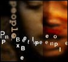

Resultatet av en ganske underlig jamsession en helg i april.

Plirk: En time lyd/video og tre musikkmaskiner i java og flash.
 En voksende antologi med bilder og fjerntekst og lyd og slikt, opprinnelig med en side for hver dag i måneden og en tanke bak, men nå kun en unnskyldning for en godt del personer for ikke å jobbe ... Her publiseres alt som kommer til poetikon fortløpende.
En voksende antologi med bilder og fjerntekst og lyd og slikt, opprinnelig med en side for hver dag i måneden og en tanke bak, men nå kun en unnskyldning for en godt del personer for ikke å jobbe ... Her publiseres alt som kommer til poetikon fortløpende.

«Jeg sitter ofte og jobber sent på natten, og plutselig dukker disse skapningene opp, f.eks. i glimtet mellom et sceneskifte i en film, eller i sterkt komprimert video. Som om de finnes et sted der inne og bare søker etter en vei ut.» Pixelpeople er en serie underlige portretter funnet i dårlige tv-serier/kunstnerens hode.
Hun sa: "Ser du linen jeg spenner mellom mitt og ditt blikk, og ser du linedanseren?". Tristessas historie er bygget opp på brokker av noveller og dikt, og forsøkt satt sammen igjen til et hele. Dette er Tristessas andre historie. Den første er gått tapt for alltid, slik ting ofte gjør når man ikke passer godt nok på dem.
silke
spinner
sang
(diktsamling)
tristessa
('pusle'spill')
('pusle'spill')
et null nynner
(tilfeldige dikt)
(tilfeldige dikt)
E ve n tyre T
(ett eneste dikt)
(ett eneste dikt)
o m v e i
(novelle)
(novelle)
(diktsamling)
(foto / manip)
(javadikt)